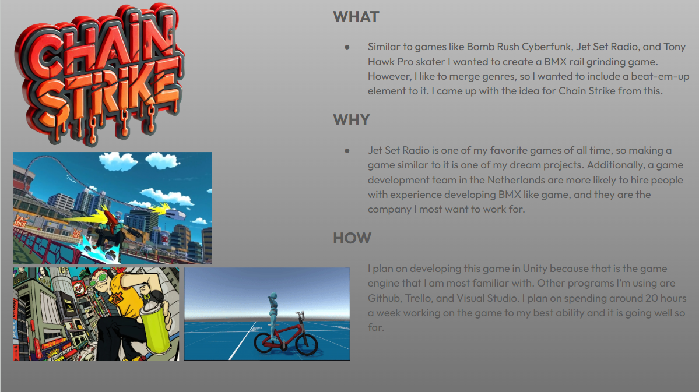

Chain Strike
A Bomb Rush Cyberfunk Capstone
Developing a Game Development Capstone Inspired by Bomb Rush Cyberfunk
For my game development capstone, I spent 10 weeks working roughly 20 hours a week on a solo project inspired heavily by Bomb Rush Cyberfunk. The goal wasn’t to recreate the game outright, but to capture the feeling of fluid movement, style-based gameplay, and momentum-driven combat — all within a scope that made sense for a college capstone. By the end of the term, I had a playable prototype featuring BMX tricks, basic combat, and a rail-grinding system. While I wasn’t fully satisfied with the final result, the project ended up being one of the most technically and creatively challenging things I’ve worked on so far, and it’s something I plan to continue developing. This was the first pitch for Chain Strike.
Scope, Time, and Expectations
Going into the project, I underestimated just how ambitious movement-focused games are. Systems like trick chaining, rail snapping, and camera behavior all interact in ways that are hard to fully plan on paper. Over the course of 10 weeks, my priorities shifted from “feature complete” to “feature solid,” which meant cutting ideas and focusing on core mechanics that actually felt good to use. Even with that shift, I still pushed myself to implement systems that would scale if I continued the project later.
BMX Tricks and Movement
The core of the game is movement. I implemented a BMX-style trick system that allows the player to perform different tricks depending on whether they’re grounded, airborne, or grinding a rail. Each trick functions as both a scoring action and a combat mechanic, dealing damage through hitboxes tied to the trick itself. From a technical standpoint, I structured tricks using interfaces so that damage values, timing windows, and effects could be swapped without rewriting combat logic. Enemies detect collisions through trigger-based hitboxes and query the active trick to determine damage and effects. This kept combat extensible while still letting me experiment with different trick behaviors quickly. Camera behavior was another major challenge. Because the game relies heavily on speed and directional momentum, small camera issues became very noticeable. I used Cinemachine and spent a lot of time tuning damping, rotation, and follow behavior to avoid jitter and motion sickness — especially during rail grinding.
This is a video of some of the movement mechanics.
Rail Grinding System
After trying to tackle the rail grinding system, it proved to be more complicated than I originally planned. I wanted to use Unity's spline package and my own code to create a line, fill it in with a cylindar mesh, give it collision, and have the player grind along it. After some research I found a video by Adam Lutton, who created a great rail grinding system that I was able to use as a baseline for the game.
If it wasn't for his work, the project would be in a much worse state. However, there were still some problems that I needed to work around for the rail grinding to be where I wanted it. Some of the bugs I encountered were camera jitter, camera controls on the spline, and getting the player to do tricks on it. I am pretty proud of how the rail grinding system turned out despite all of those, and it turned out to work great for the game.
Combat Integration
Combat in the project is intentionally simple but tightly integrated with movement. Attacks are not separate actions — they’re extensions of tricks. This design choice kept the gameplay loop fast and encouraged constant movement instead of stopping to fight. I wanted to do combat in a unique way while encouraging the player to do tricks or rail grind. The concept I came up with was a trick combo meter that applies more damage to your attacks the more tricks you do within a certain time. Other than that, the player would have a ranged weapon. Aiming down sight works, but I didn't get to implement any weapons other than the bike.
I have a spawner for simple AI enemies that chase you and attack. You can hit them by doing tricks, getting more damage with combos, and they get knocked back further depending on the trick.
Next Step
By the end of the capstone, I wasn’t happy with the overall polish level. There are rough edges, unfinished ideas, and systems that deserve more iteration. That said, I’m proud of the technical groundwork I laid under tight time constraints. The footage here is the prototype before I started to add polish and make it presentable. The final product of Chain Strike was very rushed and hard to look at, and so I didn't show off any of that work here. This project isn’t finished. I plan to return to it outside of school with a clearer vision and fewer constraints. The systems I built are intentionally modular, making it possible to improve visuals, add content, and refine feel without rewriting everything from scratch. While it didn’t end exactly how I wanted, this capstone represents a turning point in how I approach game development: less about chasing features, and more about building systems that feel good, scale well, and respect the realities of development time.